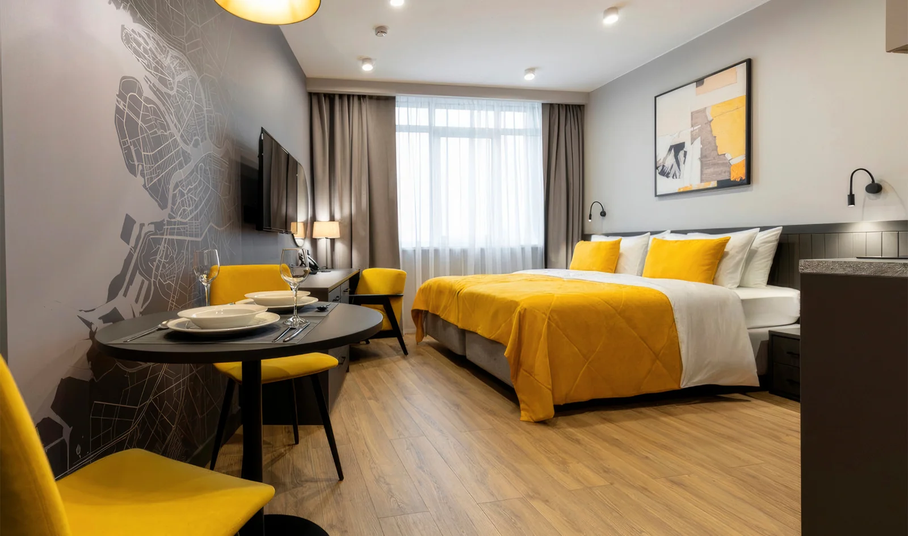
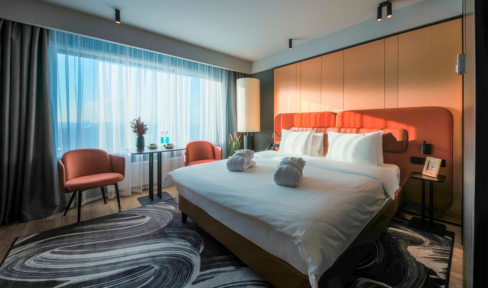
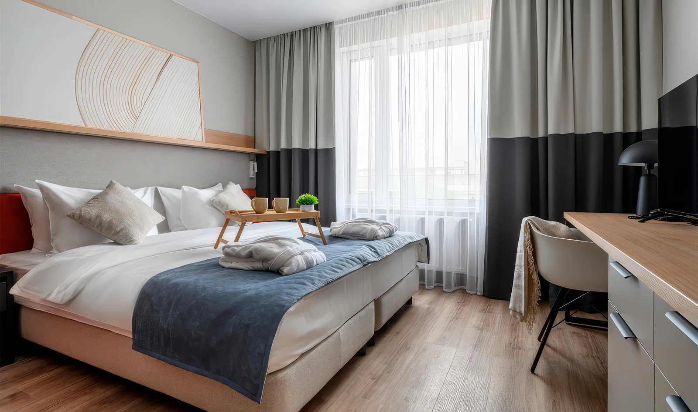
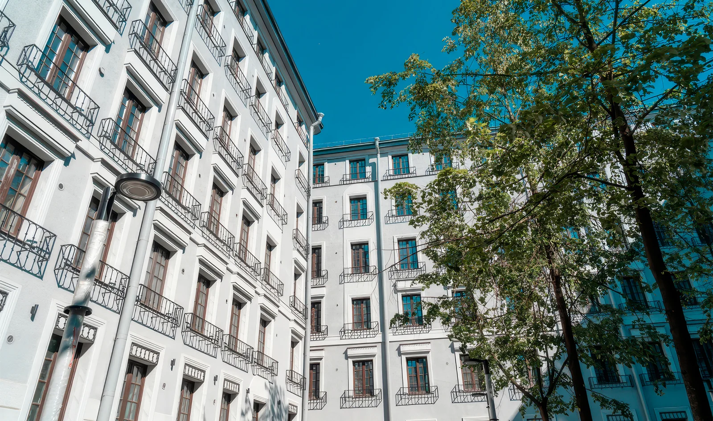
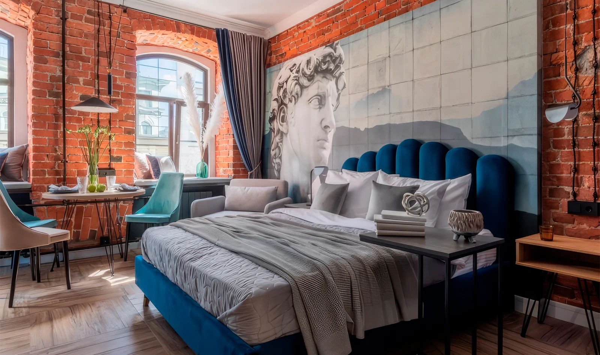

Где лучше остановиться в Санкт-Петербурге: 8 новых апарт-отелей для жизни, отпуска и работы
Автор: Диана Акчурина
Подборка апарт-отелей для разных сценариев проживания: короткая поездка, работа и более длительная остановка. Дополняет материалы о выборе района и формата жилья.
Читать полную статью на блоге Островка →










